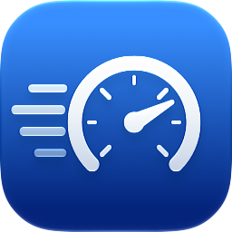
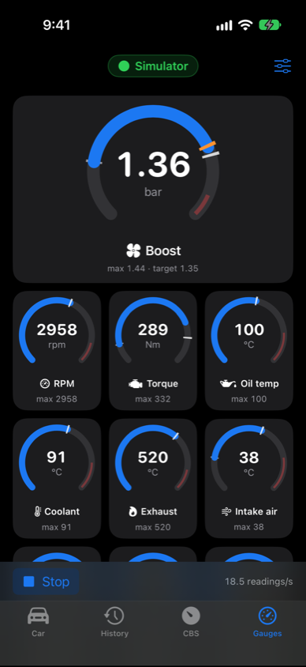
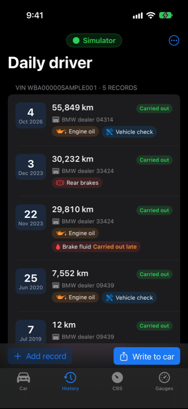
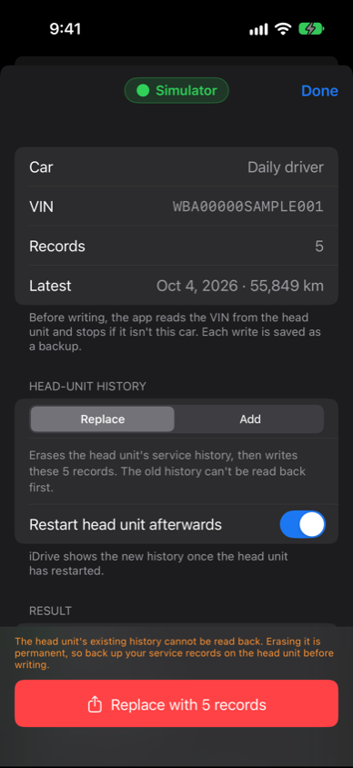
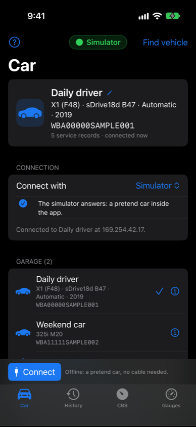
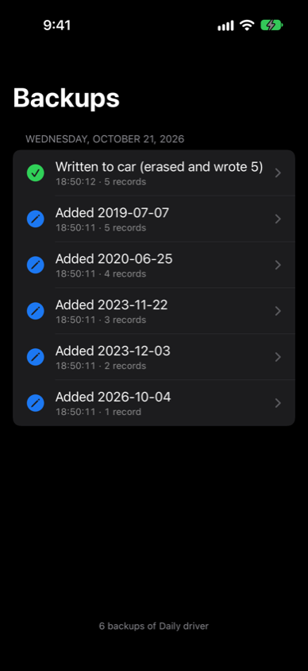
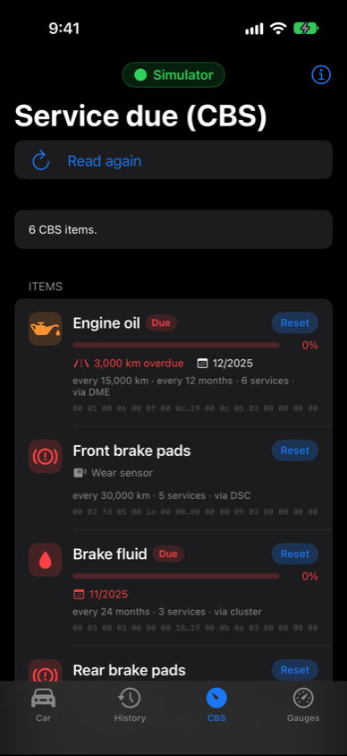
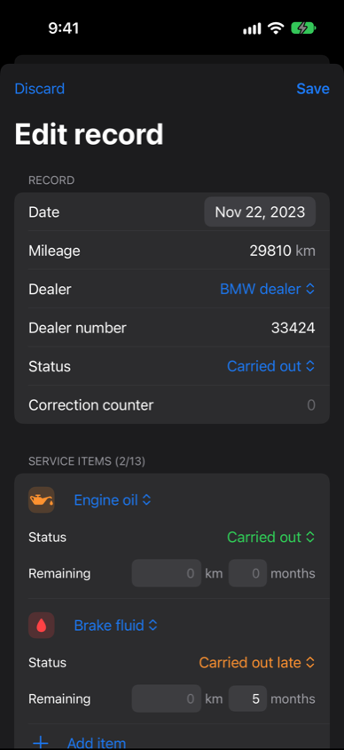

Boostbook
Live gauges and the service book for your BMW, on your iPhone.







Boostbook turns your iPhone into a gauge pod for your BMW: boost against its target, oil, coolant and exhaust temperatures, g-forces, and with xDrive how much torque the front or rear axle is taking, live from the car's control units. It works with diesel and petrol engines, and shows a plug-in hybrid's battery and electric motor. It also keeps each car's service history and writes it to the head unit, so every service shows up on the car's own Service History screen, and it reads and resets the service-due (CBS) items the instrument cluster shows.
Getting started
What you need
A BMW F, G or I-series car, and one of:
- an ENET cable (Ethernet to OBD) and a USB-C or Lightning Ethernet adapter for the iPhone. This is the fastest way. When it's plugged in, it shows under Settings > Ethernet.
- a Wi-Fi ENET adapter.
The gauges ask each control unit which version it is and read the values that version has, so they suit diesel and petrol engines, xDrive and sDrive, and plug-in hybrids. Writing service history needs an NBT Evo head unit. Boostbook was developed and tested on an F48 X1 xDrive with the B47 diesel and NBT Evo. The values for other engines, transfer cases and hybrid drives come from BMW's diagnostic data and haven't been tested on those cars yet: if something looks wrong, a sensor scan (below) helps put it right.
Connecting
On the Car tab, choose how you connect under Connect with, plug in and switch the ignition on, then:
- ENET cable: tap Find vehicle. Wi-Fi can stay on: with ENET over set to the cable, the car's traffic stays on it.
- Wi-Fi ENET adapter: join its Wi-Fi network, type its IP address and tap Connect.
Allow Local Network access when iOS asks. Boostbook connects and reads the VIN. A car it hasn't seen before is added to your garage with its own service history; a car it knows is selected.
Trying it without a car
On the Car tab, set Connect with to Simulator and tap Find vehicle. A pretend gateway, head unit, instrument cluster and engine (one that idles, pulls hard and coasts) run inside the app, so you can try every screen first.
Free
Boostbook is free, with no account, no subscription and no in-app purchases: the gauges, writing, CBS and everything else work with a real car or the simulator.
User guide
Car
The selected car, with its name and VIN, plus the connection settings and your garage. Tap a car in the garage to switch to it. Swipe a car to rename or delete it. Add car by VIN lets you prepare a car's history before you connect to it, and Import a car from a file adds a car from an exported .json or .tst file, and Import a car from a QR code from the BMW Service Manager web app. The ? button opens this guide in the app.
Car details
Tap a car's ⓘ to see:
- From the car: the model, build date, transmission, type key, paint and upholstery codes and option codes, read from the vehicle order that F, G and I-series cars keep. It's read every time you connect.
- Notes: anything you want to remember about the car.
- From the VIN: the manufacturer, the country it was made in, the type key, the model year (only where the VIN encodes one, as in North America and China) and the short VIN.
- Online: Look up online asks the US NHTSA's free VIN decoder. It's most complete for cars sold in North America.
History
The selected car's service records. Tap Add record, or tap a record to edit it:
- The date, mileage, dealer type and dealer number (up to 7 characters), and the record's status.
- Up to 13 service items, such as engine oil, front and rear brakes, brake fluid, filters, spark plugs and the vehicle check. Each item has a status (carried out, carried out late, overdue) and the distance and time left until it's next due.
Hold a record and drag it to move it. Swipe a record left to remove it or move it down, and right to move it up. The ⋯ menu has Sort by mileage (highest first), Import, Export and Backups.
Write to car
Write to car, at the bottom of the History tab, opens the write sheet: the car, its VIN, how many records and the latest one. Choose Replace (erase the head unit's history first) or Add (after what it has), and whether to restart the head unit afterwards. The button (Replace with 5 records, Add 5 records) asks for confirmation, then:
- reads the VIN from the head unit and stops if it isn't the selected car,
- erases the head unit's existing history, if you chose Replace,
- adds each record, and
- restarts the head unit, if you chose to, so the new history shows.
Each step shows a ✓ or ✗. The head unit's existing history can't be read back, so erasing it is permanent.
CBS (service due)
Read CBS lists the Condition Based Service items the instrument cluster shows. For each one you see how much life is left, the distance left or overdue, the due date, the interval and how many times it has been serviced. Reset sets an item back to 100% and adds one to its service count, in the control unit that owns it. Only reset an item once the service has been done.
Advanced tools
Turn on Advanced tools at the bottom of the in-app guide (?) for Preview requests in the write sheet, which shows exactly what will be sent, and Read / Probe on the Car tab: read-only routine results, a data-identifier scan of any control unit, and a log of every frame sent and received.
Gauges
Live values as round dials, boost on top, then the engine and chassis:
- Engine: boost against its target, RPM, torque, load and pedal position.
- Temperatures: oil, coolant, exhaust and intake air, plus battery voltage.
- Chassis: road speed, front-to-rear wheel slip, lateral and longitudinal g, and yaw rate. With xDrive, the torque going to the rear axle (front-drive models such as the X1 and 2 Series Active Tourer) or the front axle (rear-drive ones such as the 3, 5 and X5).
- Diesel: the DPF's soot, pressure and regeneration; and, to add, rail pressure, injection, air mass, lambda, fuel, NOx and AdBlue range.
- Petrol: ignition timing, and fuel pressure to add, on BMW's four-, six- and eight-cylinder turbo petrols from the N20 and N55 on (B38, B48, B58 and others).
- Plug-in hybrid and i3: the high-voltage battery's charge and power, and the electric motor's torque; its voltage, temperatures and motor speed to add.
The gauges read whenever the tab is on screen, until you tap Stop, at up to 20 readings a second. The white tick on a dial is the highest value since Start, the orange one the engine's boost target, and red on the track is the warning range. The sliders button chooses and orders the gauges; the first is shown large. Gauges your car hasn't got (xDrive on an sDrive car, a diesel's DPF on a petrol one) are left out, and one your car doesn't answer stays grey. The screen stays on while they run.
Double-tap a gauge to see what it shows and its dial's range. Gauge Size in the sliders menu, or a pinch, makes them bigger or smaller: two to a row (the size small iPhones start at), three, or four. Turn the iPhone sideways on the Gauges tab for the gauges full screen, for a dash mount: the first gauge large on the left, Stop and Record at the top. Turn it upright, or tap Exit Full Screen, for the other tabs.
Recording. Tap Record under the gauges to save every reading of the gauges on screen, and tap it again to stop. Each recording opens as a chart: each gauge on its own, or Together on one set of axes; tap a gauge to show or hide it, and drag across the chart for the values at that moment. Find them again under Recordings in the sliders menu. Each is a CSV file, for a spreadsheet: share it from the chart, or find it in the Files app under On My iPhone > Boostbook > Recordings.
Missing gauges? In the same sliders menu, Scan the Car's Sensors asks your car's control units which values they have, and Email the Report sends the result to us, so support for your car can be added. The report has the car's model, engine and build date and the values it answered, not its VIN.
Use the gauges with the car parked, or let a passenger read them. Don't look at your iPhone while you drive.
Logger
Records a drive, for watching again on a computer: off-road, or a hot lap.
- The iPhone: GPS at its best accuracy, motion (gravity, acceleration and rotation) 50 times a second, and the barometer for climbs and descents.
- The car (over ENET, as the gauges): engine, pedal, boost, xDrive's torque, each wheel's speed, g-forces and temperatures. Choose Everything for every gauge's value, or None to record only the iPhone, with no car connected.
Put the iPhone in its mount, park on level ground and tap Set Level, then Record. Which way the car points is learnt as you drive. While it records, it shows the speed, the car's pitch and roll, and its acceleration; Mark drops a flag to find later. It carries on with the screen locked or another app open, if Location is allowed.
Open a drive to see its track, distance, top speed, most pitch and roll, and cornering and braking g. Share Drive sends it as a .bblog.gz file. Open it in the web app's Drive replay page: the car on a 3D map of the terrain, turning, pitching and rolling as it did, its wheels and xDrive at work in an X-ray view, lap times with the gap to your best, charts of every value and a g-g circle. It exports for Google Earth (KML) and spreadsheets (CSV).
Don't look at or touch your iPhone while you drive: set it recording before you set off.
Your data
One history per car
Each car's history is saved on the iPhone under its VIN. Switching cars switches histories.
Backups
Every time you add, edit, remove or reorder a record, import a file, restore a backup or write to the car, Boostbook saves a dated copy of that car's history. Open ⋯ > Backups on the History tab to see them newest first. Tap one to look at it, share it or restore it; the current history is backed up before a restore, so you can always go back.
Backups are ordinary JSON files. In the Files app, they're under On My iPhone > Boostbook > Cars > the car's VIN > Backups, named by date and time.
Import and export
- Export as .json saves the car's history with its VIN and name. Export as .tst saves it in the EDIABAS Tool32 job format, with the VIN in the file name.
- Export all cars saves every car in one file.
- Import takes any of these. A file with a VIN goes to that car, and the car is added if it's new. A file without one goes to the selected car. Before an import replaces a history, the current one is backed up.
Nothing leaves your iPhone unless you export it.
Troubleshooting
"No vehicle replied"
- Check that the ignition is on, and that the adapter shows under Settings > Ethernet.
- Check ENET over on the Car tab: ENET cable (USB Ethernet) or Wi-Fi ENET adapter, whichever you use.
- Check that Local Network is on for Boostbook in Settings > Privacy & Security > Local Network.
- The search can take up to about 20 seconds. If it still fails, type the gateway's IP address on the Car tab and tap Connect.
"Couldn't read the VIN; nothing was written"
The head unit didn't answer the VIN request. Check the connection with Connect on the Car tab, and wait until the head unit has finished starting up.
"This history is for … ; nothing was written"
The car on the cable isn't the selected car. The new car has been added to the garage: select the right car on the Car tab and try again.
The history doesn't show in the car
Leave Restart head unit afterwards on, or restart the head unit yourself.
Take care. Writing service history and resetting service items changes your car's control units. Check what you're writing first, and keep the ignition on and the battery charged while you work.
Support
Questions, problems or a car that doesn't work? Email apps@earlish.com.au. Please include your car's model and year, the head unit, and what the app showed.